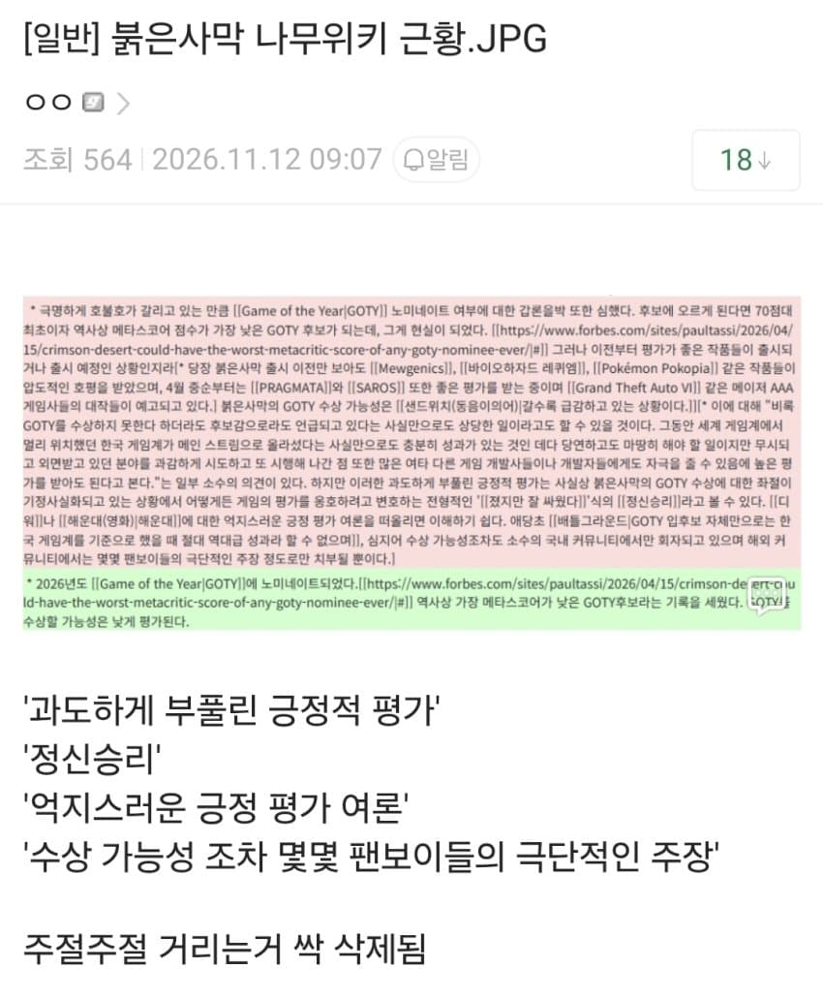

64 · 3 · 5 시간 전 · 원문

짜치게 붉은사막 욕하는 서술이 많았는데 전부 삭제됨
수집 당시 댓글 3개
Devriwolf · 5 시간 전
스토리 개병신인건 똑같은데
키나루디안마기 · 5 시간 전
삭제된 자리 두고 또 토론 열릴 각 ㅋㅋ
쓰으으윽 · 4 시간 전
할건 진짜 뒤지게 많음 ㅋㅋㅋㅋㅋ 잠깐 쉬었다가 다시 따라가려면 거대한 벽이 있는 느낌이야 ㅋㅋㅋ
스토리 개병신인건 똑같은데